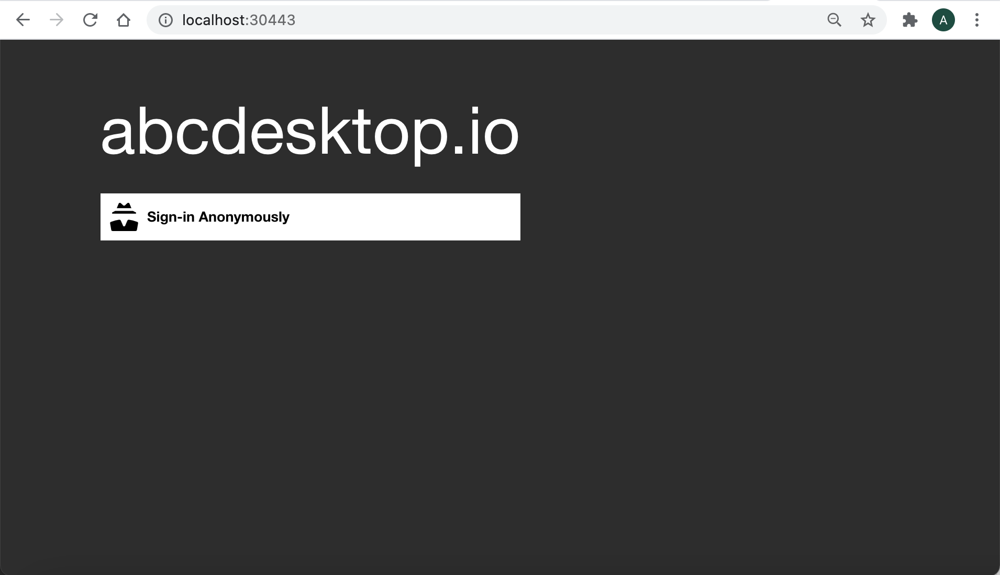
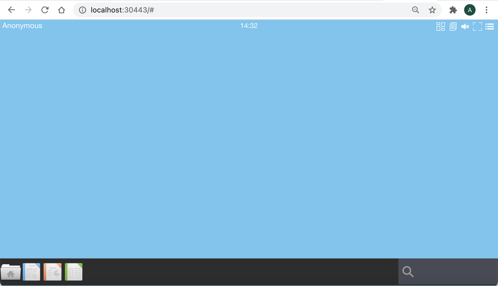
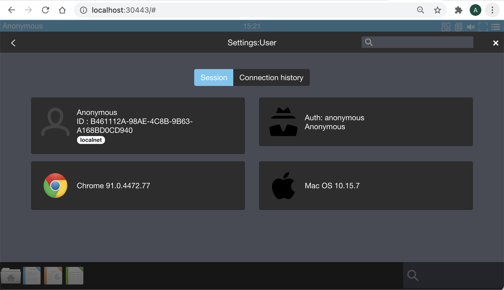
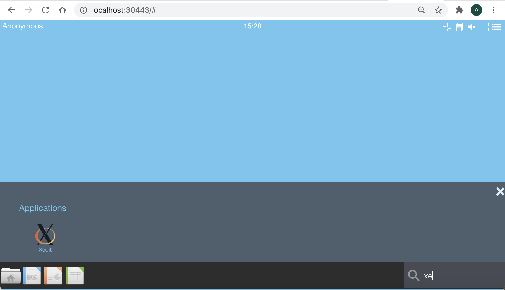
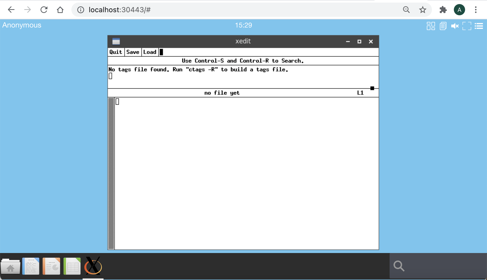

Define access control list for application
Goals
- restrict access to applications using authentication label
Requirements
- A running dockerd last version
- An access to the docker public registry
- An access to the ubuntu repository
- Nodejs installed on your host.
Update applist.json file
To restrict access to applications using authentication label, you need to define an acl entry in the application dictionary object.
"acl": { "permit": [ "tag" ] },
For example using the application xedit
all is a special label for everything. The xedit application can be run for all tags.
{
"acl": { "permit": [ "all" ] },
"cat": "utilities",
"debpackage": "x11-apps",
"icon": "xedit.svg",
"keyword": "text,notepad,edit,txt,editor,xedit",
"launch": "xedit.Xedit",
"name": "xedit",
"displayname": "Xedit",
"path": "/usr/bin/xedit",
"template": "abcdesktopio/oc.template.gtk",
"mimetype": "application/text;",
"fileextensions":"txt;log;md"
}
To restrict access to applications using authentication label, you have to define label using rules during authentification step, and define label to the application.
Define authenticated label using rules
You can read the chapter authentification-rules to define some autenticated labels.
Update the od.config file, to add a label mylocal if the source ip address is in local network 192.168.0.0/16
authmanagers: {
'external': {},
'explicit': {},
'implicit': {
'providers': {
'anonymous': {
'displayname': 'Anonymous',
'caption': 'Have a look !',
'userid': 'anonymous',
'username': 'Anonymous',
'policies': {
'acl' : { 'permit': [ 'all' ] },
'rules' :
{ 'rule-net-home': {
'conditions' : [ { 'network': '192.168.0.0/16', 'expected' : True } ],
'expected' : True,
'label' : 'localnet'
}
}
}
}
}
}
}
Restart the pyos service
Using kubernetes run
kubectl rollout restart daemonset daemonset-pyos -n abcdesktopUsing docker only, run
docker-compose restart
When your services are restarted, launch your web browser

Login to your abcdesktop service and choose anonymous authentication

Check the label set during the authentication process
Goto the menu option at the right up corner, choose Settings | User | Session

You should read the label localnet in the Anonymous user information.
Define the acl label to the application
You can read the chapter Build your own application image , if your are building user docker abcdsktop application image for the first time.
Create a xedit.json file
Create a edit.json file with the content :
{
"acl": { "permit": [ "localhost", "localnet" ] },
"cat": "utilities",
"debpackage": "x11-apps",
"icon": "xedit.svg",
"keyword": "text,notepad,edit,txt,editor,xedit",
"launch": "xedit.Xedit",
"name": "xedit",
"displayname": "Xedit",
"path": "/usr/bin/xedit",
"template": "abcdesktopio/oc.template.gtk",
"mimetype": "application/text;",
"fileextensions":"txt;log;md"
}
To build your new image, download the make.js script file. make.js is located in the oc.apps repository. Look at https://github.com/abcdesktopio/oc.apps if you can't download this file.
Make sure that you have installed nodejs
To install make.js command
wget https://raw.githubusercontent.com/abcdesktopio/oc.apps/main/make.js
Create icons directory
mkdir -p icons
curl --output icons/xedit.svg https://raw.githubusercontent.com/abcdesktopio/oc.apps/main/icons/xedit.svg
Run the make command
node make.js -f xedit.json Dockerfile
You should read on standard output
myArgs: [ '-f', 'xedit.json', 'Dockerfile' ]
opening file xedit.json
applist.json entries: 1
myArgs: [ '-f', 'xedit.json', 'Dockerfile' ]
Building file Dockerfile as output
{
acl: { permit: [ 'all' ] },
cat: 'utilities',
debpackage: 'x11-apps',
icon: 'xedit.svg',
keyword: 'text,notepad,edit,txt,editor,xedit',
launch: 'xedit.Xedit',
name: 'xedit',
displayname: 'Xedit',
path: '/usr/bin/xedit',
template: 'abcdesktopio/oc.template.gtk',
mimetype: 'application/text;',
fileextensions: 'txt;log;md'
}
Building xedit.Xedit
Look at the new Dockerfile, and build the new docker image for xedit
docker build -t xedit.d .
You should read on standard output
[+] Building 13.0s (11/11) FINISHED
=> [internal] load build definition from Dockerfile 0.0s
=> => transferring dockerfile: 2.01kB 0.0s
=> [internal] load .dockerignore 0.0s
=> => transferring context: 2B 0.0s
=> [internal] load metadata for docker.io/abcdesktopio/oc.template.gtk:dev 2.3s
=> [auth] abcdesktopio/oc.template.gtk:pull token for registry-1.docker.io 0.0s
=> [1/6] FROM docker.io/abcdesktopio/oc.template.gtk:dev@sha256:4aac32209c27a3e88906f39aecdfee6833bed022871366356bfd5518e2248b79 0.4s
=> => resolve docker.io/abcdesktopio/oc.template.gtk:dev@sha256:4aac32209c27a3e88906f39aecdfee6833bed022871366356bfd5518e2248b79 0.0s
=> => sha256:4aac32209c27a3e88906f39aecdfee6833bed022871366356bfd5518e2248b79 3.88kB / 3.88kB 0.0s
=> => sha256:fe01ec1c214baf8b3e86255ac7dbca3157be4932ae19dfe07bbcf7d8c8839b07 7.80kB / 7.80kB 0.0s
=> [2/6] RUN DEBIAN_FRONTEND=noninteractive apt-get update && apt-get install -y --no-install-recommends x11-apps && apt-get clean 8.7s
=> [3/6] RUN echo 'debconf debconf/frontend select Noninteractive' | debconf-set-selections 0.4s
=> [4/6] RUN if [ -d /usr/share/icons ]; then cd /usr/share/icons; /composer/safelinks.sh; fi 0.3s
=> [5/6] RUN if [ -d /usr/share/pixmaps ]; then cd /usr/share/pixmaps; /composer/safelinks.sh; fi 0.3s
=> [6/6] WORKDIR /home/balloon 0.0s
=> exporting to image 0.3s
=> => exporting layers 0.3s
=> => writing image sha256:0b7cb908c88bf6301eb0555e558e99436e40bd5604e7ffebd12f137e9b5f9878 0.0s
=> => naming to docker.io/library/xedit.d
Then look at the acl label
docker inspect xedit.d | grep oc.acl
"oc.acl": "{\"permit\":[\"localhost\",\"localnet\"]}",
"oc.acl": "{\"permit\":[\"localhost\",\"localnet\"]}",
The acl is stringified json object.
Run the xedit application from your local network
The xedit application is listed only if your are connected from a local network matching the previous rules.
Look for the application xedit, using the quick launch search text area on the bottom right corner. Insert the first character of xedit :

Launch the xedit application

Run the application from another source IP address or update the acl application
Update acl of xedit application
To update the acl of xedit application, edit the edit.json file with the content, and set nowhere tag in acl array :
{
"acl": { "permit": [ "nowhere" ] },
"cat": "utilities",
"debpackage": "x11-apps",
"icon": "xedit.svg",
"keyword": "text,notepad,edit,txt,editor,xedit",
"launch": "xedit.Xedit",
"name": "xedit",
"displayname": "Xedit",
"path": "/usr/bin/xedit",
"template": "abcdesktopio/oc.template.gtk",
"mimetype": "application/text;",
"fileextensions":"txt;log;md"
}
Then, rebuild Dockerfile and the docker image of the xedit application
node make.js -f xedit.json Dockerfile
docker build -t xedit.d .
% node make.js -f xedit.json Dockerfile
myArgs: [ '-f', 'xedit.json', 'Dockerfile' ]
opening file xedit.json
applist.json entries: 1
myArgs: [ '-f', 'xedit.json', 'Dockerfile' ]
Building file Dockerfile as output
{
acl: { permit: [ 'nowhere' ] },
cat: 'utilities',
debpackage: 'x11-apps',
icon: 'xedit.svg',
keyword: 'text,notepad,edit,txt,editor,xedit',
launch: 'xedit.Xedit',
name: 'xedit',
displayname: 'Xedit',
path: '/usr/bin/xedit',
template: 'abcdesktopio/oc.template.gtk',
mimetype: 'application/text;',
fileextensions: 'txt;log;md'
}
Building xedit.Xedit
% docker build -t xedit.d .
[+] Building 1.5s (11/11) FINISHED
=> [internal] load build definition from Dockerfile 0.0s
=> => transferring dockerfile: 4.19kB 0.0s
=> [internal] load .dockerignore 0.0s
=> => transferring context: 2B 0.0s
=> [internal] load metadata for docker.io/abcdesktopio/oc.template.gtk:dev 1.4s
=> [auth] abcdesktopio/oc.template.gtk:pull token for registry-1.docker.io 0.0s
=> [1/6] FROM docker.io/abcdesktopio/oc.template.gtk:dev@sha256:4aac32209c27a3e88906f39aecdfee6833bed022871366356bfd5518e2248b79 0.0s
=> CACHED [2/6] RUN DEBIAN_FRONTEND=noninteractive apt-get update && apt-get install -y --no-install-recommends x11-apps && apt-get clean 0.0s
=> CACHED [3/6] RUN echo 'debconf debconf/frontend select Noninteractive' | debconf-set-selections 0.0s
=> CACHED [4/6] RUN if [ -d /usr/share/icons ]; then cd /usr/share/icons; /composer/safelinks.sh; fi 0.0s
=> CACHED [5/6] RUN if [ -d /usr/share/pixmaps ]; then cd /usr/share/pixmaps; /composer/safelinks.sh; fi 0.0s
=> CACHED [6/6] WORKDIR /home/balloon 0.0s
=> exporting to image 0.0s
=> => exporting layers 0.0s
=> => writing image sha256:640a4dd66b03420c4128e2fcd920dc5749cc5b687abc62b68e52f3c562943903 0.0s
=> => naming to docker.io/library/xedit.d
Launch your web browser, and log in to your abcdesktop service
Check that xedit is not found and not listed.
The new acl does not allow the xedit application to be run and show.
You can now define your own rules, add set the access control list to your applications.